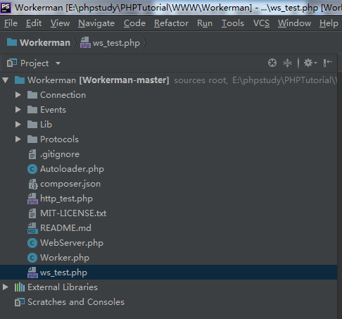
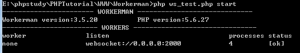
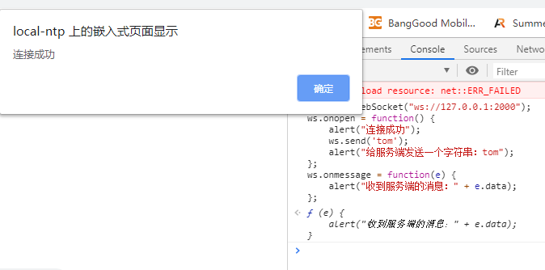
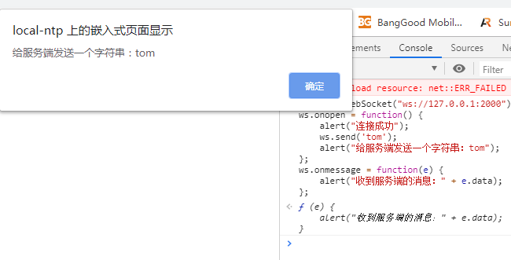
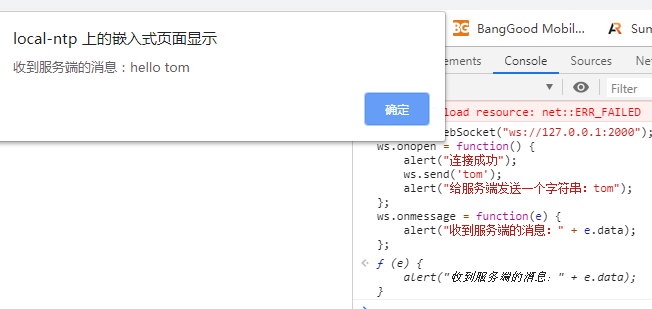

一、在Workerman目录下创建ws_test.php，如下图，并输入如下代码：

<?php
use Workerman\Worker;
require_once __DIR__ . '/Autoloader.php';
// 注意：使用的是websocket协议
$ws_worker = new Worker("websocket://0.0.0.0:2000");
// 启动4个进程对外提供服务
$ws_worker->count = 4;
// 当收到客户端发来的数据后返回hello $data给客户端
$ws_worker->onMessage = function($connection, $data)
{
// 向客户端发送hello $data
$connection->send('hello ' . $data);
};
// 运行worker
Worker::runAll();二、cmd输入php ws_test.php start，如下图所示：

三、chrome浏览器按F12打开控制台，在Console输入如下代码：
ws = new WebSocket("ws://127.0.0.1:2000");
ws.onopen = function() {
alert("连接成功");
ws.send('tom');
alert("给服务端发送一个字符串：tom");
};
ws.onmessage = function(e) {
alert("收到服务端的消息：" + e.data);
};四、响应结果如下图：


